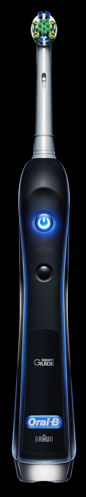

Oral-B® Black 7000
Designed by Braun,
it truly is engineered to perform
It’s what happens when German engineers have a zero tolerance for plaque. It accelerates to top speed faster than a high performance sports car. Seven independent functions. Up to 800 brush movements per second.
Pressure-Sensor
Sophisticated pressure-sensor technology alerts you if you’re brushing too hard and automatically decelerates the pulsation and oscillation speeds of the brush head.
Wireless SmartGuide
Wireless SmartGuide gives you real-time information about brushing modes, times and areas.
Braun Design
Designed by the engineers at Braun, it removes up to 100% more plaque than a regular manual brush.
Top Brand
Oral-B is the #1 dentist-recommended toothbrush brand worldwide.

Brushing Modes
Six High-Performance Brushing Modes: Daily Clean, Deep Clean, Whitening, Massage, Sensitive and Tongue Cleaning.
Water Tolerant
Specially designed seals and gaskets keep the Oral-B Black water tolerant to 500 millibars of pressure.
High-Tech Materials
Made of different high-tech materials like silicon, the black travel case protects all of its vital technology.

Features
A SmartGuide for personalized Oral Care coaching
The Oral-B Wireless SmartGuide provides real-time guidance to help you brush the way dentists recommend. Its quadrant guides help you brush for the recommended 2 minutes (3 minutes with Deep Clean Mode). The SmartGuide is even wall mountable for your convenience.
Daily Clean Mode with 3D Movement
Gum Care Pressure Sensor
Sensitive Mode
Whitening Mode
Massage Mode
Deep Clean Mode
Tongue Cleaner Mode
Exclusive Premium Travel Case